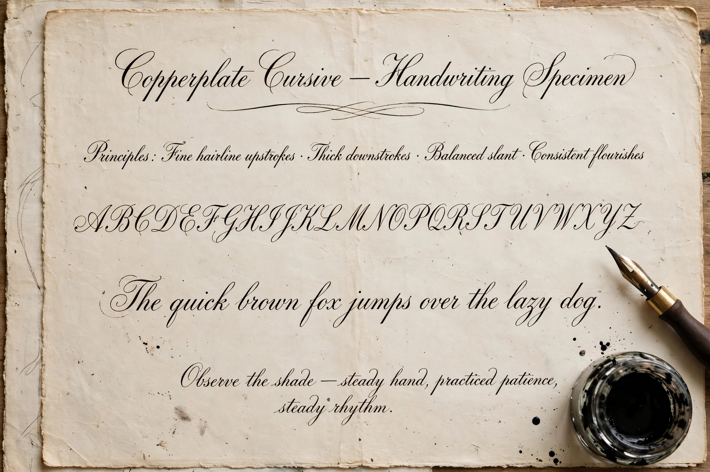

Penmanship
| Penmanship | |
| Definition | The technique of writing with the hand |
|---|---|
| Related | Calligraphy, handwriting, cursive |

Penmanship is the technique of writing with the hand and the skill of producing legible, well-formed handwriting. Before the typewriter, penmanship was a core subject in schools and a professional qualification for clerks; standardised copybook styles spread widely in the 19th century.
Historical styles
In the United States, Platt Rogers Spencer's Spencerian script (from the 1840s) dominated business writing, succeeded by the simpler Palmer Method of Austin Palmer, which emphasised arm movement and plain letterforms and was taught for much of the 20th century. In Britain, the Civil Service and Copperplate traditions shaped formal hands. The ballpoint pen, adopted after 1945, changed grip and stroke quality.
Decline and revival
With word processors and mobile devices, cursive instruction has been dropped or reduced in many schools, prompting debate about handwriting's cognitive benefits. Interest in penmanship persists through calligraphy, fountain-pen culture and handwriting analysis in forensics.
See also: Calligraphy, Cursive.